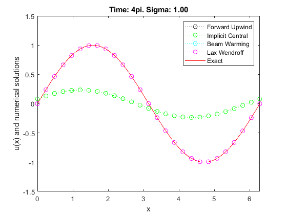

clear all; close all; clc;
c=1;
L=2*pi;
T=2*2*pi;
M=0;
fexact='exact.dat';
sigma= 0.25;
n=25;
method = {'forward-upwind','implicit-central','beam-warming', ...
'lax-wendroff'};
u0 = @(x) sin(x);
xx=linspace(0,L,1000);
figure
sigma = 1;
colors = {'ko:','go:','co:','mo:'};
for k = 1:4
clear out
out=wave_solve(c,L,n,sigma,T,M,u0,method{k});
plot(out.x,out.U(:,2),colors{k});
hold on
axis([0,L,-1.5,1.5]);
xlabel('x');
ylabel('u(x) and numerical solutions');
title(sprintf('Time: 4pi. Sigma: %.2f',sigma));
end
plot(xx,u0(xx-out.TT(2)),'r-');
legend('Forward Upwind','Implicit Central','Beam Warming',...
'Lax Wendroff','Exact')
